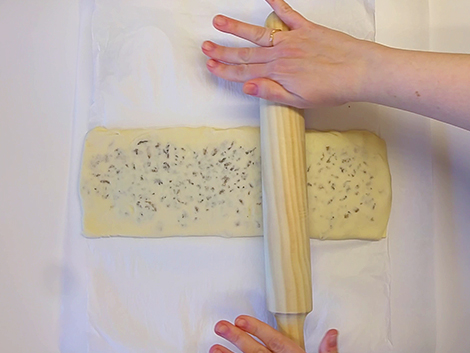
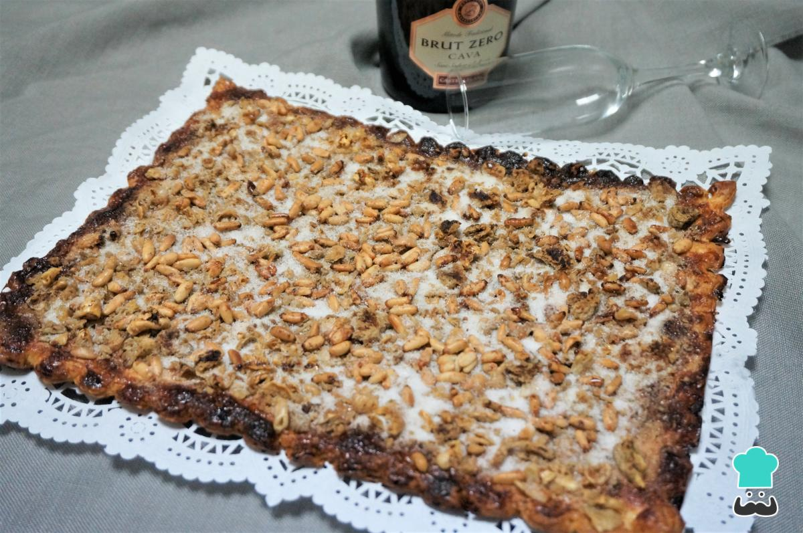
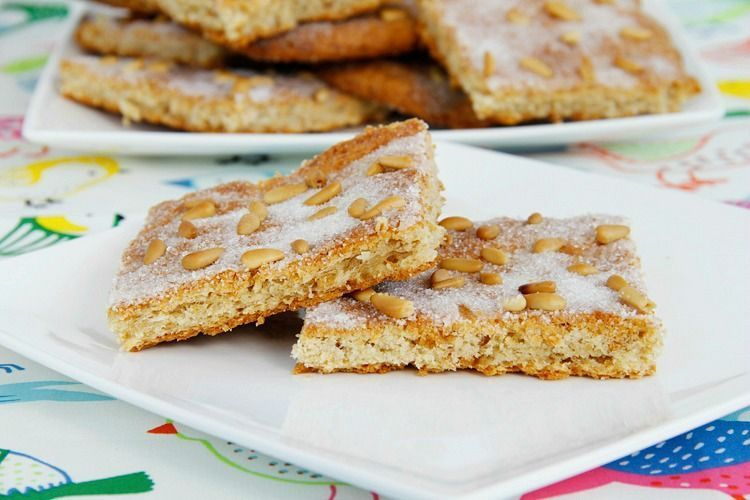
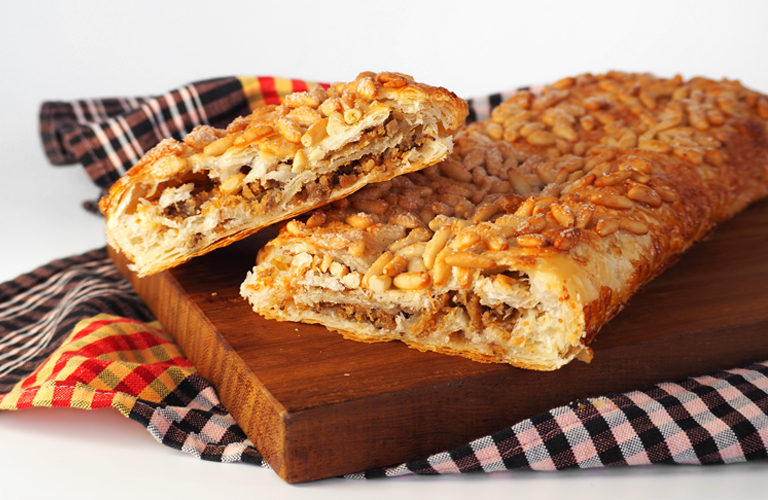
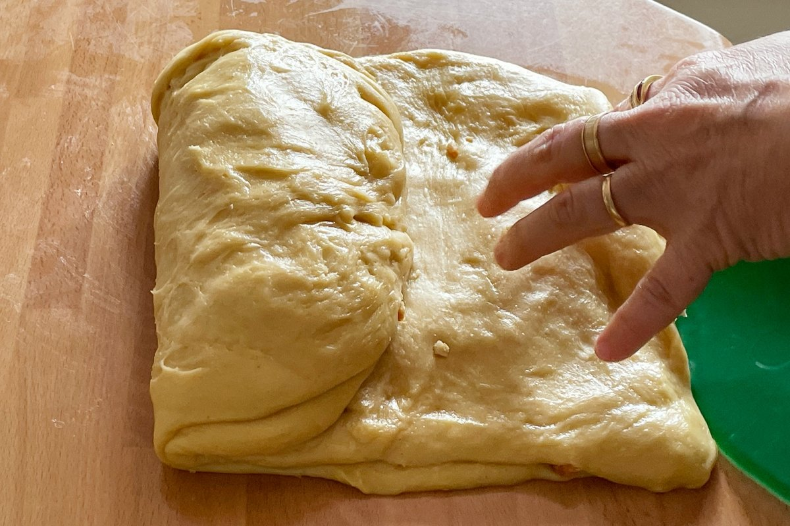

Coca de Llardons
Avui us portem una recepta ben tradicional! Al Dijous Gras, que marca l’inici del Carnaval es menja coca de llardons. Aquesta coca té els seus orígens en la cuina popular, quan s’aprofitaven els llardons sobrants de fer llard de porc per crear un dolç exquisit i energètic.
És perfecta per acompanyar un bon cafè o xocolata calenta en el Dijous Gras o qualsevol ocasió especial. La seva combinació de sabors dolços i salats, amb la textura cruixent dels pinyons i la suavitat del brioix, la converteixen en una autèntica delícia.
Comencem amb la recepta.
Ingredients:
- Una làmina de pasta de full rectangular
- 80 g de llardons
- 80 g de sucre
- 25 grams de sucre (decoració)
- Pinyons
- Una mica de farina

Passos a seguir:
- Posem farina sobre el taulell i estenem la làmina de pasta de full.
- Triturem els llardons.
- Dividim mentalment la làmina de pasta de full en tres parts iguals i posem a sobre de la franja central els llardons que hem hagut de triturar amb un robot de cuina.
- Afegim la meitat del sucre a sobre la coca (uns 40 grams).
- Dobleguem una de les parts que no té llardons a sobre i ho aixafem amb un corró. Al damunt, hi posem més llardons i més sucre (uns 40 grams més). A continuació, dobleguem la part que ens queda i ho tapem. Ho tornem a aixafar amb el corró perquè ens quedi tot junt.
- La tallem per la meitat i l'estenem amb el corró. Després fem el mateix amb l'altra meitat. Que quedi ben prima.
- La posem sobre la safata amb l'ajuda del corró.
- Batem un ou i pintem la coca per sobre amb una mica d'ou.
- Hi afegim els pinyons per sobre i més sucre (els 25 grams restants).
- Posem la safata al forn, a 180 ºC amb l'escalfor de sota, la de sobre i l'aire, si volem.
- En 12-15 minuts ja està torrada i la podem treure del forn.
Possibles presentacions:




Molt senzilla de fer i molt bona